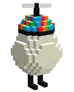

Ovos
Estes ovos foram abandonados por uma Dragoa quando ela acordou com a quebra da parede. Os Ovos foram levados pela Federação e entregues aos Moradores da Ilha Quesadilla para que cuidem deles.
| Foto | Nome | Parentes | Idiomas |
|---|---|---|---|

|
Bobby | Jaiden e Roier | Espanhol Mexicano e Inglês |

|
Chayanne | Missasinfonia e Philza | Inglês Americano, Chinês e Espanhol Mexicano |

|
Dapper | Missasinfonia e Philza | Inglês, Espanhol Mexicano e Alemão |

|
JuanaFlippa | Slimecicle e ElMariana | Inglês e Espanhol |

|
Leonarda | Vegetta e Foolish | Inglês e Espanhol |

|
Ramón | FitMC e SpreenDMC | Inglês e Espanhol |

|
Tilín | Quackity e Luzu | Inglês e Espanhol |
|  | Trump | DanTDM e Maximus | Inglês e Espanhol |

|
Tallulah | Wilbur Soot | Inglês e Espanhol Mexicano |

|
Richarlyson | Cellbit, Felps, Forever, Mike e Pac | Português Brasileiro, Inglês e Espanhol Mexicano |

|
Pomme | Baghera Jones, Aypierre, Etoiles, Kameto e Antoine Daniel | Francês e Inglês |

|
Gegg | Quackity | Francês e Inglês |
Curiosidades
Chayanne?!
Chayanne é o ovo mais velho.
Ovos trigêmeos
Ramón, Dapper e Leonarda são trigêmeos.
Ovos são bilíngues!!
Todos os ovos são pelo menos bilíngues.
Oh Bobby...
O Admin de Bobby era fã de Roier por muitos anos e, após a morte do ovo, foi inspirado a começar a fazer Lives novamente.
Ovos Neurodivergentes??
Alguns dos ovos são canonicamente Neurodivergentes.
Ovos geralmente falam por plaquinhas!
A maioria dos Ovos são mudos, com exceção de Chayanne, tendo a habilidade de falar em raras ocasiões.
OCDs (Ovos com deficiência)
Alguns dos Ovos tem deficiências, como Richarlyson ser manco e Tallulah ter ouvidos sensíveis.
Hope
No dia 161, durante uma investigação dada pela Federação, Cellbit encontrou um diário nomeado "Memórias" em que um ovo nunca adotado nem nomeado escreveu o seu desejo de não ser esquecido. Aparentemente, o chat do criador de conteúdo decidiu batizar o ovinho de "Hope", que significa esperança em português.